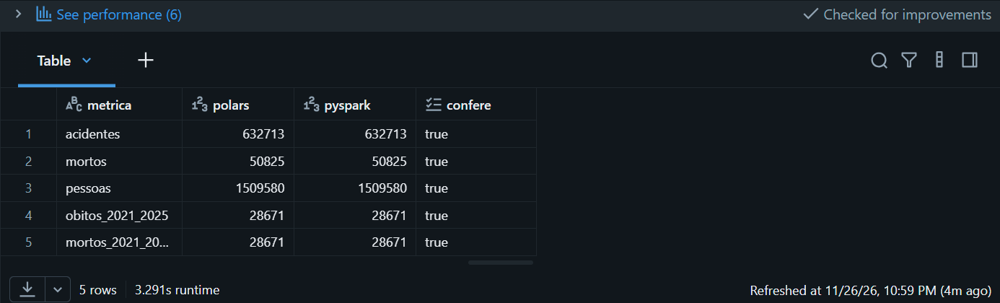

PRF · Dados abertos · 2017 a 2025
Nove anos de boletins da Polícia Rodoviária Federal, tratados em um pipeline medalhão (Polars localmente e PySpark no Databricks), para responder onde, quando e por que os acidentes matam, e quais trechos pedem intervenção primeiro.
01 · Tendência
Registrados pela PRF
Letalidade
02 · Mapa
2021 a 2025. Cada ponto é uma célula de 0,1° (cerca de 11 km). Passe o mouse para ver os números.
2021 a 2025 · passe o mouse para destacar no mapa
03 · Causas
2021 a 2025, causas com 300 acidentes ou mais, sem suicídio presumido. Eixo horizontal em escala logarítmica.
Tamanho do ponto = número de mortos
04 · Contexto
2021 a 2025 · fase do dia, tipo de pista e área
2021 a 2025
05 · Vítimas
2021 a 2025
2021 a 2025
06 · Recomendações
07 · Método
Verificações automáticas do pipeline
Última célula do notebook PySpark (serverless, Unity Catalog)
